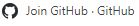
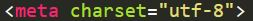
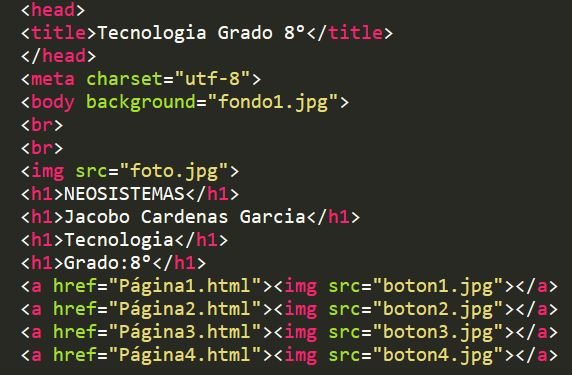
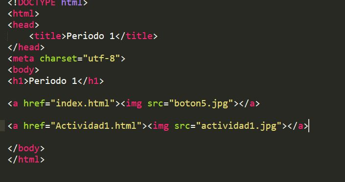

¡Resumen De Lo Visto En Clase!
En las clases de esta semana hemos visto muchas cosas que vimos el año pasado y para los que recuerdan algo de esto es un repaso, Y para los que no, estan aprendiendo algo nuevo, Estas clases me han parcido muy entretenidas ya que me gusta como el profesor explica etc...
Este año trabajamos una nueva plataforma la cual se llama GitHub, Esta plataforma nos sirve para montar la página que creamos, Este año tambien utilizamos Sublime Text para crear una página en la cual pudieramos montar nuestros propios trabajos, Esto es un poco de lo que vimos este año.


En estas semanitas hemos visto unas herramientas super importantes como el programa GitHub que ya antes habia hablado de el, Hace poco en este año volvimo a ver C++, Restomamos unas nuevas cositas de Sublime Text, Como los botones, Colocarle el fondo a las páginas, Es algo muy basico pero a cualquier persona se le puede olvidar.
Estas semanas lo que hemos visto lo he entendido perfectamente, Como ya lo habia dicho en el texto anterior por la manera en la que el profe nos explica y muchas cosas más.
Aca les dejare unas imagenes de algunos codigos.

